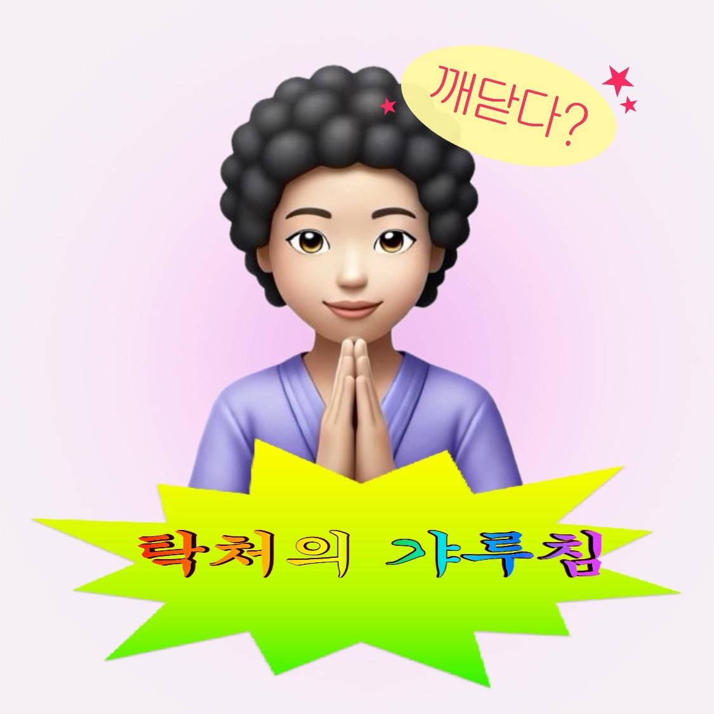

오늘의 갸루침
새로고침보다 나은 한마디
고민 상담소
고민을 넣으면 탁처가 돌려준다
탁처의 답
고민은 비워져 있을 때 가장 크게 울린다. 한 줄만 적어도 이미 수행은 시작되었다.
탁처 경전
장엄하지만 사소한 장과 절
탁처 만다라
오늘의 번뇌를 누르라
주제를 누르면 해당 번뇌에 맞는 갸루침이 열린다.

오늘의 갸루침
고민 상담소
탁처의 답
고민은 비워져 있을 때 가장 크게 울린다. 한 줄만 적어도 이미 수행은 시작되었다.
탁처 경전
탁처 만다라
주제를 누르면 해당 번뇌에 맞는 갸루침이 열린다.